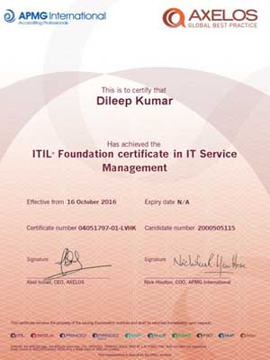

Education
MCA
I have done my post graduation in Master of Computer Applications from Madurai Kamaraj University. Madurai Kamaraj University is a Statutory University, established in 1965 by Govt. of Tamilnadu. It is recognized and funded by UGC and is a member of Association of Indian Universities. It has been reaccredited by NAAC with grade A. The Directorate of Distance Education of this university was established in 1971 and has a student strength of about 1.20 lakhs. The University is accorded with the status of " University with Potential for Excellence " - A status conferred by the University Grants Commission. So far 9 such Universities in the Country were awarded this status.
Bachelore Degree
I completed my Bachelor's degree at Sree Vidyadhi Raja NSS College (SVR NSS College), Vazhoor, located in Kottayam District, Kerala affiliated with M.G.University.
I initially began my degree studies at University College, Thiruvananthapuram, under Kerala University. However, midway through the course, I transferred to M.G.University due to my family’s relocation from Thiruvananthapuram to Kottayam following my father’s bank transfer.
Pre-Degree
I have done by Pre-Degree from Mahatma Gandhi College, Thiruvananthapuram., under Kerala University. Mahatma Gandhi College, the institution dedicated to the memory of the Father of the Nation was established in the year 1948 by the legendary social reformer Bharatha Kesari Sri Mannathu Padmanabhan. It is one of the largest and oldest institutions of higher education in the capital city of the state of Kerala run by the largest educational agency of Kerala, the Nair Service Society.
SSLC
SSLC stands for Secondary School Leaving Certificate. It is issued by the secondary board of the school on successful completion of class 10th. ... In states like Kerala, Tamil Nadu and Karnataka, SSLC is a criteria for common eligibility in examinations
The schools and colleges in Kerala are run by the government or private trusts and individuals. After 10 years of secondary schooling, students typically enroll at Higher Secondary School in one of the three streams—liberal arts, commerce, or science. Upon completing the required coursework, students can enroll in general or professional degree programs
ST JOSEPH’S HIGHER SECONDARY SCHOOL
I have completed my school studies in St. Joseph’s Higher Secondary School, Thiruvananthapuram, Kerala. The Carmelite Missionaries started this school in 1857 in the building which is at present the AG’s office, Trivandrum. Later it was shifted to the campus near to St.Joseph’s Cathedral, Palayam. In 1905, the school was again shifted to its present location near the General Hospital, Trivandrum. Sri.Madhava Rao, the then Dewan of the erstwhile Travancore declared St.Joseph’s as a recognized school of the Travancore State at a public meeting held at the school campus on 18th January 1905.
Professional Certifications
ITIL Foundation Certificate V 5.5.
The ITIL Foundation certification will introduce you to the key elements, concepts and terminology used in the ITIL® service lifecycle.
AWS Certified Solutions Architect - Professional
Microsoft Certified : Microsoft Azure Architect Expert
AZ-304 Microsoft Azure Architect Design
AZ-303 Microsoft Azure Architect Technologies
MCSE: Cloud Platform and Infrastructure
Implementing Microsoft Azure Infrastructure Solutions
MCSA: Windows Server 2016 Microsoft Certified Solutions Associate (MCP ID: 6074302)
MCSA: Windows Server 2012 Solutions Associate
Installing and Configuring Windows Server 2012 Administering Windows Server 2012Configuring Advanced Windows Server 2012 Services
MCITP: Server Administrator on Windows Server 2008
MCSA : Windows Server 2003 Systems Administrator: Microsoft Certified Systems Administrator: Messaging on Windows Server 2003
Microsoft® Certified Technology Specialist: Microsoft Windows Vista, Configuration.
CCNA : Cisco Certified Network Associate (ID: CSC011171904)
- Microsoft Certification Official Transcript
Transcript ID: 872367
